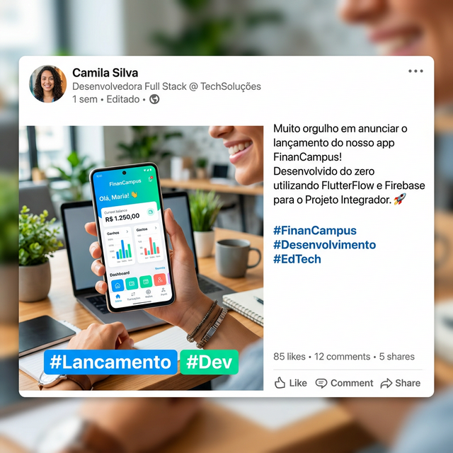

Estudo de Caso 16 — Encerramento de Ciclo e Portfólio
Objetivo da Semana
Finalizado o momento "Show Time" com a banca, é tempo de colher o aprendizado utilizando a Retrospectiva Start/Stop/Continue e usar as entregas validadas publicadas num canal de portfólio (como LinkedIn ou Behance) com apelo corporativo.
Passo a Passo da Atividade
O time deve dividir a tela em três áreas (verde, vermelho, amarelo) indicando com post-its o que deve continuar igual, o que não devia mais ser repetido em projetos, e o que pode dar o "start".
Use suas fotos durante seu dia de pitch, juntamente com o Mockup e seu certificado para postar num local que faça de você um profissional de TI pronto para o emprego inicial / estágio.
Exemplo de Prompt: "Atuando como um Especialista em Carreira de TI (Tech Recruiter), crie um post envolvente e profissional para o meu LinkedIn anunciando que eu e meu grupo concluímos e publicamos um App real utilizando FlutterFlow..."
Para concluir as atividades desta semana, reúna todas as informações e artefatos gerados nos passos anteriores e preencha o template oficial de entrega. Faça uma cópia do documento para a sua conta Google e compartilhe-o com o professor.
Acessar Template: Encerramento e Showcase de Portfólio de Finalização
📱 Estudo de Caso: FinanCampus
Veja o resultado final da jornada do grupo do FinanCampus.

Apresentação final realizada com sucesso. A banca fez 3 perguntas: por que escolheram Firebase, como funciona as Security Rules e como evoluiriam o app em v2.0. O grupo respondeu com segurança às três.
Resultado por critério:
- Funcionalidade: ⭐⭐⭐⭐⭐ — CRUD completo, autenticação, gráfico e notificação
- Design e UX: ⭐⭐⭐⭐⭐ — identidade visual coesa, fácil de usar
- Integração Técnica: ⭐⭐⭐⭐⭐ — Firebase com Security Rules funcionando perfeitamente
- Documentação: ⭐⭐⭐⭐ — Notion completo, DER detalhado
- Apresentação: ⭐⭐⭐⭐⭐ — demo ao vivo impacou a banca
App publicado na Google Play Store: "FinanCampus — Controle de Gastos". 28 downloads na primeira semana — entre eles, colegas do campus que viram o link no post do LinkedIn do grupo.
Retrospectiva do grupo (Start/Stop/Continue):
- 🟢 Continue: reuniões semanais curtas com checklist de progresso.
- 🔴 Stop: deixar tarefas de documentação para a última hora.
- 🟡 Start: usar o GitHub para versionar o código exportado do FlutterFlow desde o início.